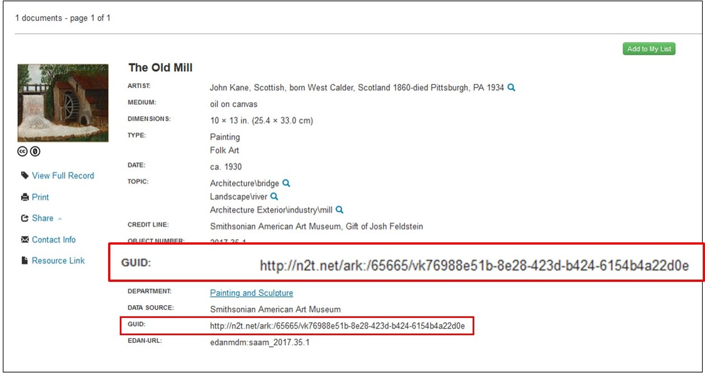
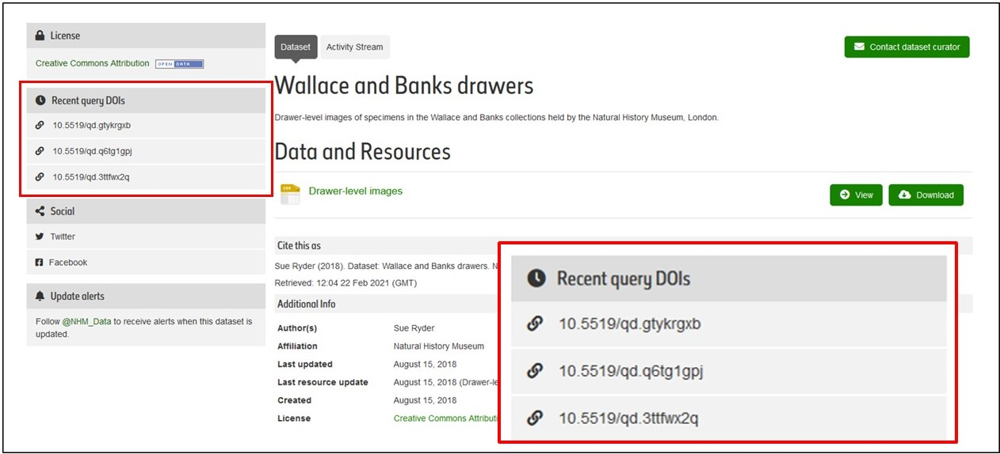

Explanation
Your organisation registers identifiers with an external identifier provider such as ARK or DOI. The identifiers point to a resource hosted by your organisation but the identifiers are resolvable via this scheme, rather than an institution specific domain (web address). The resource can be a human readable web page, a machine readable page (e.g. a JSON file), or both. This introduces contractual requirements for persistence and maintenance of access to resources.
Potential Benefits
- Identifiers such as DOIs are a recognisable brand and they can be a way to indicate that you are serious about the persistence of your identifiers
- Persistent external identifiers reduce the perceived risk for your users that the identifier will disappear, hence it is worthwhile for them to cite the identifier, include it in their own databases, etc
- Agencies that mint and manage external identifiers often provide additional services, such as search engines to locate content that their identifiers have been assigned to. This can increase discoverability of your content (see, e.g. DataCite Search)
- Collection items are persistently citable and resolvable
- Can be used internally across systems
- Can be used to track contents and location of the entire collection
- Allows bi-direction cross-linking
- Allows cross-searching of collections
- Collection information can easily be aggregated
- Greater guarantee of persistence through the external governance provided by a PID service provider
Dependencies
Persistence of the identifier depends on both the persistence of the external provider, and on your own organisation's ability to manage your local web pages, so if you change the web site all existing external identifiers will still resolve.
Given the expectation that any identifiers will persist indefinitely, once you have minted identifiers it is difficult to reverse that step. The things you have chosen to identify, and the format of the identifier are decisions that your organisation will potentially have to live with for a long time.
Some external PID providers expect that you will supply metadata for each item identified, so you will need to have tools that can deliver that information.
If you want external identifiers to be used (e.g., cited) then you will need to make sure those identifiers are easily visible, and ideally provide a way for them to be cited.
Builds on
Compatible PID Types
For more compatible identifiers, see Which persistent identifier does what?
Feedback
We value your feedback on this resource. Any suggestions on the content or additional examples would be welcome.
To submit feedback, you can raise an issue via Github (requires an account) or you can use the Feedback button in the bottom right of each screen.
Examples
The Smithsonian uses ARKs to identify its collections and uses the global N2T resolver to provide access to them.
Screenshot of a record from the Smithsonian's collections with permanent link highlighted.The Natural History Museum assigns DOIs to datasets in their collections including DOIs for queries to datasets held within the portal.
Screenshot of a record from the Natural History Museum's Data Portal with query DOIs highlighted.The Irish National Folklore Collection based at University College Dublin mints DOIs for its digitised archive collections.
 Screenshot of a record from the National Folklore Collection.
Screenshot of a record from the National Folklore Collection.